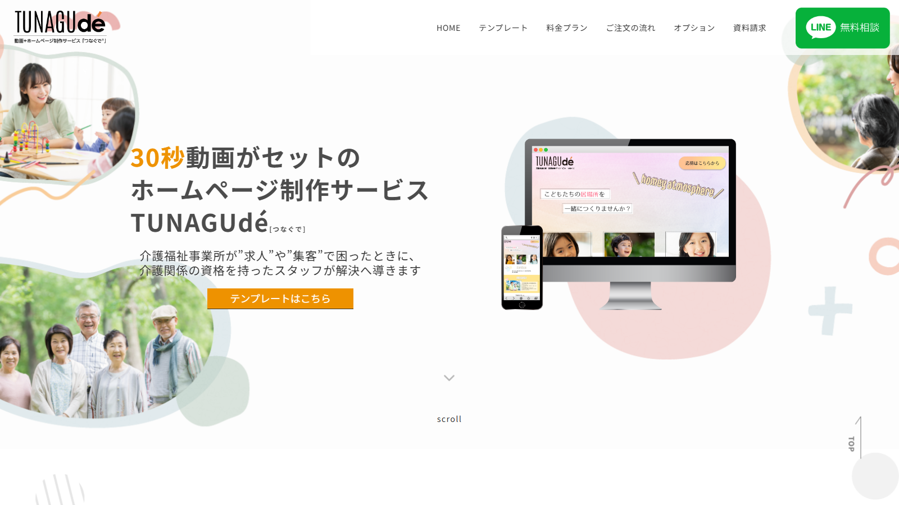
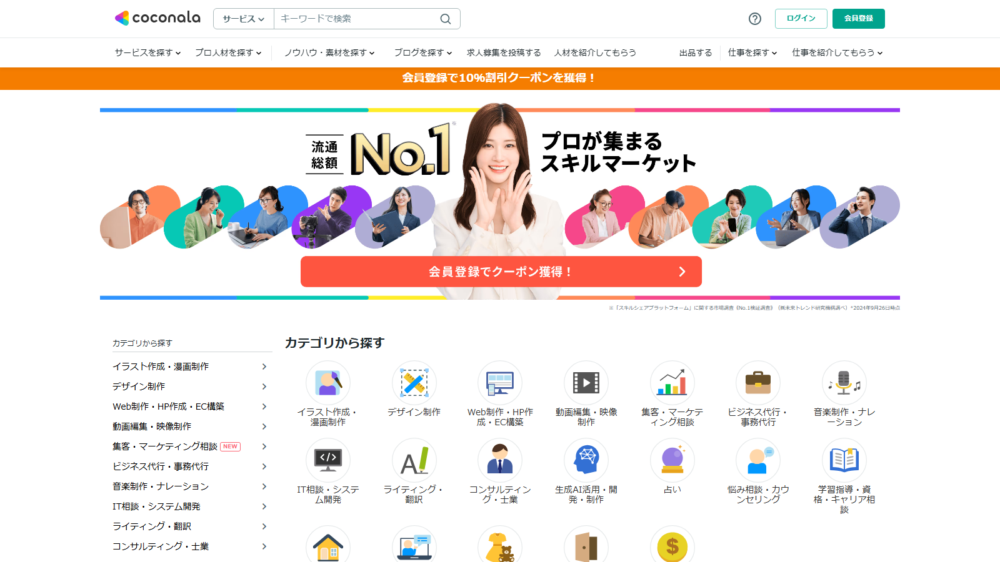

障害者グループホーム向けのホームページ制作サービスは、費用だけでなく、グループホームへの理解、デザイン、相談のしやすさ、公開後の支援内容にも違いがあります。
費用を抑えたい方、短期間で作りたい方、デザインや集客まで任せたい方など、重視するポイントによって適した依頼先は異なります。
まずは比較表と目的別おすすめから、ご自身に合う選択肢をご確認ください。
目次
まずは4社の特徴を一覧で比較できます。詳しい説明は後半でご紹介します。
← 左右にスライドして比較できます →
| 比較項目 | Onenet福祉特化・自社更新型 | 福祉ITパートナー低価格・短納期型 | TUNAGUdé動画・デザイン重視型 | ココナラスキル販売・個人制作者 |
|---|---|---|---|---|
| 1年間の費用の目安税込相当・初期費用＋月額×12か月 | 197,560円初期107,800円＋月額7,480円×12か月（5ページまで） | 19,800円～55,000円ライト19,800円／ブランディング55,000円（月額なし。更新を自社で行う場合） | 220,000円～初期220,000円～（うごくdéプラン・動画付き1ページ）＋サーバー・ドメイン等は公式サイトで確認できず | 30,000円～500,000円程度出品者・内容により大きく異なる（制作費20,000円～の出品あり） |
| グループホームへの理解 | ◎制作実績にグループホームの事業所あり。福祉業界出身の技術者 | ◎対応サービスにグループホームを明記。精神保健福祉士が運営 | ○介護福祉施設を運営する会社が制作 | △出品者により異なる |
| デザイン・表現の幅 | ○カスタム可能なテンプレート（5ページまで） | ○ブランディングは個別デザイン（ライトは基本デザイン） | ◎動画・アバター動画付きで施設の雰囲気を伝えられる | ○選択肢は多いが、出品者により異なる |
| 相談のしやすさ | ○電話・メール、訪問またはテレビ電話でヒアリング | ◎無料相談あり。福祉の現場経験者が対応 | ◎相談無料（LINE等）。福祉施設の運営会社 | △出品者へのメッセージで相談。対応は出品者による |
| 公開後の更新・サポート | ○自分で編集できる（マニュアルあり） | ○自分で更新できる。更新代行は別途相談 | ○納品後2か月の運用サポート。お知らせ機能は自社で更新可 | △出品者により異なる |
| 納期の目安 | △公式サイトに記載なし | ◎最短48時間～（通常14日） | ○契約から1か月程度が目安 | △出品者により異なる |
| こんな方に | 福祉出身の担当者に相談しつつ、自分たちで更新したい事業所 | まず少ない費用で、早く公開したい事業所 | 動画で施設の雰囲気や魅力を伝えたい事業所 | 多くの出品者から予算やデザインを比較して選びたい事業所 |
※◎○△は、2026年11月10日時点の各社の公式サイトの記載にもとづく、当サイト編集部の評価です。◎＝特に充実していると確認できるもの、○＝対応を確認できるもの、△＝限定的、または記載を確認できないものです。セルの小さな文字が評価の根拠です。評価は他社と同じ基準で行っており、当サイトは福祉ITパートナーの関連会社が運営している点にもご留意ください。
※△は、非対応を意味するものではありません。契約前に各社へご確認ください。
※2026年11月10日に各社の公式サイトで確認した情報です（ココナラは出品者ごとに異なり、2026年7月時点の目安です）。料金やサービス内容は変更される場合があります。契約前に必ず公式サイトで最新情報をご確認ください。
※1年間の費用の目安は、初期費用＋月額×12か月（税込相当）です。サーバー・ドメインの実費と、更新代行の費用は含みません。福祉ITパートナーは月額契約がなく、公開後の更新を自社で行う前提の金額です。Onenetは税別表示（初期98,000円・月額6,800円）に10％を加えています。
※TUNAGUdéは、公式サイトでサーバー・ドメイン・保守の費用を確認できなかったため、「～」としています。表示のプラン料金は、動画付き1ページの制作費（税込）です。
※ココナラは出品者ごとに料金・対応範囲が異なります。上記は特定の出品者を示すものではありません。
※以前掲載していた福祉経営サポートセンターは、公式サイトでホームページ制作サービスの案内が確認できなくなったため、掲載をやめ、Onenetに差し替えました（2026年11月）。
1年間の費用は、福祉ITパートナーが19,800円～55,000円です。ココナラは出品者により大きく異なるため、作業の範囲を確認して選びましょう。
Onenet（合同会社フェレット）
 公式サイトを見る ↗
公式サイトを見る ↗
福祉業界出身の技術者で構成される会社で、福祉事業所向けのホームページ制作サービス「Onenet」を提供しています。公式サイトの制作実績には、就労継続支援B型とグループホームを運営する事業所が載っています。
公式サイトの表示は税別で、5ページまで（1事業所のみ掲載）は初期98,000円・月額6,800円です。複数の事業所を掲載する10ページまでのプランは、初期148,000円・月額9,800円です。ブログ機能の設置は29,800円（税別）です。
メリット
- 福祉業界出身の技術者が、事業所に合わせて設計とデザインを行う
- スマホ対応、問い合わせフォーム、Googleマップへの登録、独自ドメインの取得が料金プランに含まれる
- 納品後は、テキストや画像を自分で編集でき、編集用のマニュアルも渡される
- 複数の事業所を同時に掲載するプランがあり、複数のホームを運営する法人にも使いやすい
注意点
- 月額費用が続く。ブログ機能は別料金（29,800円・税別）
- 納期の目安は、公式サイトで確認できなかった
- 制作時には、掲載内容を入力する提出シートの作成が必要になる
こんな方におすすめ
福祉の現場を知る担当者に相談しながら作りたい方、空室情報やお知らせを自分たちで更新したい方、複数のグループホームを運営している法人
福祉ITパートナー
 公式サイトを見る ↗
公式サイトを見る ↗
精神保健福祉士が運営する、福祉事業所・福祉団体向けのホームページ制作サービスです。費用を抑えながら、グループホームの支援内容、暮らしの様子、見学や問い合わせに必要な情報を相談して整理できます。
おまかせライトは1ページ構成、ブランディングは事業所に合わせて構成を提案します（いずれも税込）。サーバー契約・ドメイン取得・公開作業は基本料金に含まれません。
公開後の更新は自分で行えます。更新代行などは、必要に応じて別途相談となります。
メリット
- 精神保健福祉士へ相談できる
- 1年間の費用を抑えやすい（月額契約なし）
- 福祉事業所に必要な内容を一緒に整理できる
- 希望者だけ月額サポートを利用できる
- 通常14日、素材がそろえば最短48時間から対応可能
注意点
- 大規模サイトや複雑な機能には向かない場合がある
- サーバー契約・ドメイン取得・公開作業は基本料金に含まれず、別途必要
- 写真や文章などの素材準備が必要になる場合がある
こんな方におすすめ
費用を抑えてホームページを作りたい方、福祉を理解した相手に相談したい方、必要な情報を一緒に整理してほしい方、月額契約を必須にしたくない方
TUNAGUdé

公式サイトを見る ↗介護・福祉事業所向けに、動画付きホームページを制作するサービスです。文章や写真だけでは伝わりにくい施設の雰囲気や、スタッフ、支援内容などを動画やアニメーションで表現できます。
アニメーション動画と、縦長1ページのホームページ制作を含むプランです（税込）。ほかに、撮影動画付きの撮るdéプラン（264,000円）、アバター動画付きのアニメdéプラン（253,000円）があります。
サーバー、ドメイン、保守などの継続費用は、契約前に確認が必要です。
メリット
- 動画で施設や支援の雰囲気を伝えやすい
- 介護・福祉分野に特化している
- スマートフォン対応のページを制作できる
- 納品後2か月の運用サポートがある
注意点
- 他社と比べて費用が高め
- 基本プランは縦長1ページの構成
- 動画の素材や原稿を準備する必要がある
- サーバーやドメイン等の費用は事前確認が必要
こんな方におすすめ
動画で施設の雰囲気や魅力を伝えたい方、入居希望者や家族に安心感を与えたい方、採用や見学の問い合わせにも活用したい方
ココナラ

公式サイトを見る ↗多数の個人制作者や制作事業者から、料金、デザイン、実績、口コミを比較して依頼できるスキルマーケットです。低価格のサービスから本格的なWordPress制作まで幅広く、希望条件に合う出品者を自分で探せます。
出品者、ページ数、制作方法、サーバー、ドメイン、保守契約などにより大きく異なります。
メリット
- 多くの出品者を比較できる
- 低価格のサービスが見つかる場合がある
- デザインや制作方法の選択肢が多い
- 口コミや実績を確認して依頼できる
注意点
- 福祉分野への理解は出品者ごとに異なる
- 料金に含まれる作業範囲の確認が必要
- サーバーやドメインが別料金の場合がある
- 納品後のサポート内容も出品者ごとに異なる
こんな方におすすめ
複数の制作者を比較して決めたい方、予算やデザインに細かな希望がある方、自分で出品内容や実績を確認できる方

総額、納期、月額料金など、依頼前に確認しておきたい項目をまとめました。
← 左右にスライドして比較できます →
| 比較項目 | Onenet5ページまで | 福祉ITパートナーライト／ブランディング | TUNAGUdéうごくdéプラン | ココナラ出品者による |
|---|---|---|---|---|
| 1年間の費用の目安税込相当・初期費用＋月額×12か月 | 197,560円初期107,800円＋月額7,480円×12か月（5ページまで） | 19,800円～55,000円ライト19,800円／ブランディング55,000円（月額なし。更新を自社で行う場合） | 220,000円～初期220,000円～（うごくdéプラン・動画付き1ページ）＋サーバー・ドメイン等は公式サイトで確認できず | 30,000円～500,000円程度出品者・内容により大きく異なる（制作費20,000円～の出品あり） |
| 3年間の費用の目安 | 377,080円 （初期107,800円＋月額7,480円×36か月） |
19,800円／55,000円 （公開後の更新を自社で行う場合） |
220,000円～ （継続費用は公式サイトで確認できず） |
出品者により異なる |
| サーバー・ドメイン | 独自ドメインの取得を含む（実費の扱いは要確認） | 基本料金に含まれない（取得・公開作業は別途） | 公式サイトで確認できず（契約前に要確認） | 出品者により異なる |
| 追加費用がかかるもの | ブログ機能（29,800円・税別）、ページ追加 | 公開作業、公開後の更新代行（相談） | フォーム・ページ追加・素材準備などのオプション（11,000円（税込）～など） | 出品者により異なる |
※料金は各社の公開情報をもとにした目安です（税込相当）。ページ数、機能、素材の準備状況などにより、実際の費用や制作期間は変わる場合があります。
※3年間の費用は、初期費用＋月額×36か月です。TUNAGUdéのサーバー、ドメイン、公開後の継続費用は、契約前に確認が必要です。
※ココナラは出品者ごとに料金や対応範囲が異なるため、サービス内容を個別に確認してください。
障害者グループホームのホームページでは、見た目や料金だけでなく、入居希望者や家族、相談支援事業所に必要な情報が伝わるかどうかが重要です。
制作会社を選ぶ際は、次の5つのポイントを確認しましょう。
障害福祉への理解があるか
グループホームのホームページでは、支援内容や入居対象者、生活の様子などを分かりやすく伝える必要があります。
障害福祉への理解がある制作者であれば、専門的な内容を整理しながら、本人や家族にも伝わりやすい表現を相談できます。
確認ポイント
- 障害福祉事業の制作実績や運営経験があるか
- 福祉制度や支援内容への理解があるか
- 専門用語を分かりやすく整理してくれるか
必要な情報を掲載できるか
入居を検討する方や家族は、支援内容だけでなく、費用、設備、対象者、見学方法などを確認しています。
必要な情報が不足すると、問い合わせ前の不安を解消できません。
確認ポイント
- 支援内容や1日の流れを掲載できるか
- 利用料金や入居条件を分かりやすく示せるか
- 居室、設備、食事などの生活情報を掲載できるか
- 見学や問い合わせへの導線を設置できるか
スマートフォンで見やすいか
本人や家族、支援者の多くは、スマートフォンからホームページを閲覧します。
文字が小さい、表が見切れる、問い合わせボタンが押しにくいといった状態は、離脱の原因になります。
確認ポイント
- スマートフォン表示に対応しているか
- 文字やボタンが見やすいか
- 電話や問い合わせフォームへ進みやすいか
- ページの表示速度に問題がないか
制作後の費用とサポートを確認する
ホームページは制作費だけでなく、サーバー、ドメイン、保守、更新などの費用が継続して発生する場合があります。
初期費用だけで判断せず、1年間に必要な総額と、公開後にどこまで対応してもらえるかを確認しましょう。
確認ポイント
- サーバーやドメイン費用が含まれているか
- 月額費用や更新費用が必要か
- 文章や写真の変更を依頼できるか
- 自分たちで更新できる仕組みか
問い合わせにつながる構成か
ホームページの目的は、情報を掲載するだけではなく、見学、入居相談、採用などの行動につなげることです。
誰に何を伝えたいのかを整理し、問い合わせまで迷わず進める構成になっているかを確認してください。
確認ポイント
- 見学や入居相談のボタンが分かりやすいか
- 電話番号や受付時間が掲載されているか
- 空室状況や募集情報を更新できるか
- 採用情報への導線も設置できるか
制作会社を選ぶ際は、料金の安さだけでなく、障害福祉への理解、掲載できる情報、公開後の費用やサポートまで比較することが大切です。
自社がホームページで実現したいことを整理し、目的に合った制作会社を選びましょう。
障害者グループホーム向けのホームページ制作サービスは、料金だけでなく、制作方法、福祉への理解、公開までの期間、公開後のサポートに違いがあります。
自社が重視するポイントを整理したうえで、目的に合った依頼先を選ぶことが大切です。
1年間の費用は、福祉ITパートナーが19,800円～55,000円です。ココナラは出品者により大きく異なるため、作業の範囲を確認して選びましょう。
目的に合わない制作サービスを選ぶと、必要な情報を掲載できなかったり、想定以上の維持費が発生したりする場合があります。
制作前に、ホームページで伝えたい内容、予算、公開希望時期、公開後の更新方法を整理し、複数のサービスを比較して選びましょう。
本記事の比較について
本記事は、各社の公式サイト等で公開されている情報をもとに、料金・特徴・サポート内容などを比較しています。
掲載内容は2026年11月10日時点の情報です（ココナラは2026年7月時点の目安）。金額は税込相当に統一し、掲載順は1年間の費用の安い順を基本としていますが、運営の関連会社である福祉ITパートナーは、先頭にせず2番目に掲載しています。料金やサービス内容は変更される場合があるため、依頼前に各社の公式サイトで最新情報をご確認ください。
特定のサービスを一方的に推奨することを目的としたものではありません。